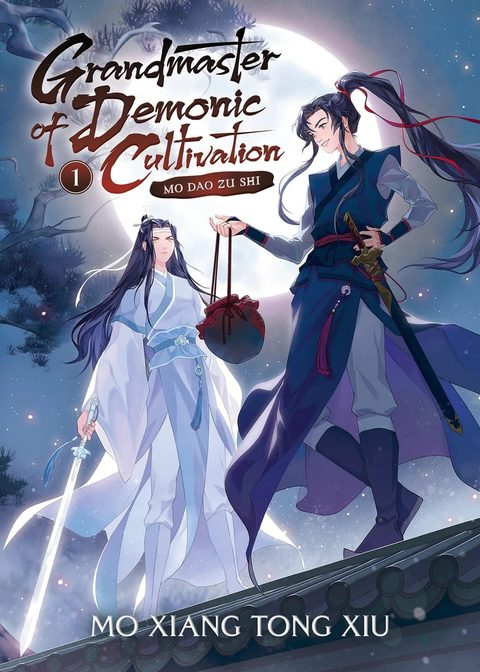

Grandmaster of Demonic Cultivation
Synopsis
A feared cultivator is killed, then brought back years later and pulled into an old mystery alongside a stern former friend.
News of a Death
Summary of chapter 1
News spreads quickly through the cultivation world that Wei Wuxian, the feared Yiling Patriarch, is dead after a massive siege of his stronghold, the Burial Mound. Cultivators from great clans and lonely mountain paths alike gather to talk about it, and most of them are openly glad.
In their retelling, the Jiang clan took Wei Wuxian in and raised him, only for him to turn against them and the other clans. Jiang Cheng, the young Jiang clan leader, is praised for planning the attack. Some say Wei Wuxian was torn apart by his own ghost generals, and others credit him with one last good deed: destroying the dangerous Yin Tiger Talisman before the end.
Beneath the celebration, a shadow of unease remains. Wei Wuxian’s soul could never be summoned back, so no one knows whether it was destroyed or escaped. Fearing his return through rebirth, the great clans place 120 stone beasts on the Burial Mound and begin frequent summoning rituals.